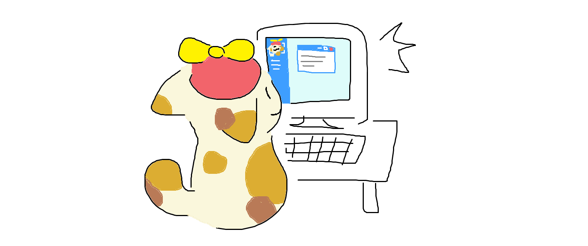
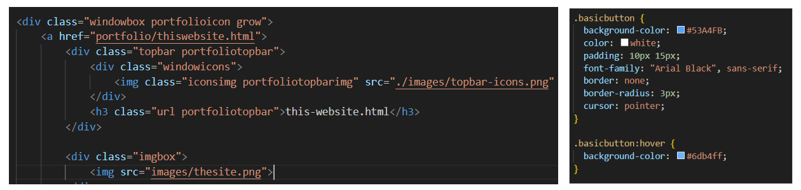
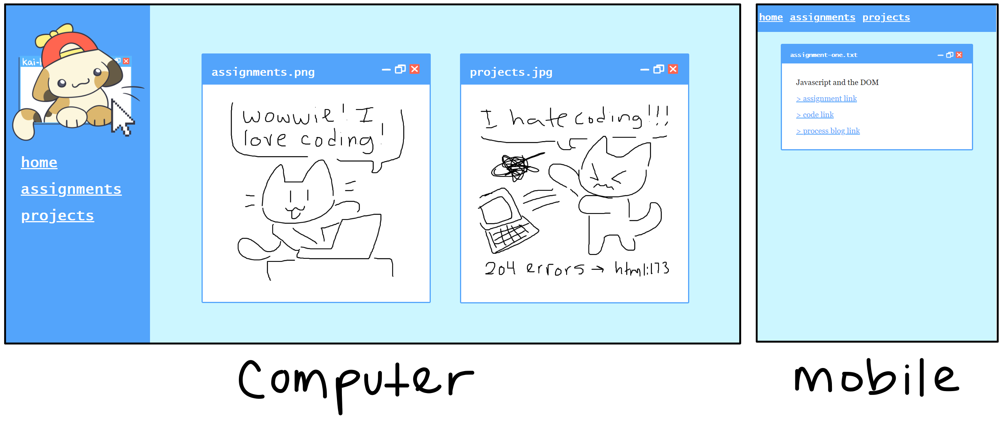

sep 2023 - ongoing <
I hand coded this site using html, javascript, and css. Most of the art is done by me as well.


I code websites! So when I felt like I needed a more updated portfolio and personal website, I decided to hand code it myself. The site uses html, css, and javascript so that it is reactive and looks nice. The style of the site is a modern, pop art inspired version of the retro internet aesthetic, which features pop up window boxes and text symbols. It's something I grew up with, and feel is a large part of my personality and inspiration as an artist.
The site originally started as a site to host assignments and miscellaneous coding projects, but I decided to pivot and give the site a revamp. I'm constantly working on improving this site and making it more reactive and fun!
